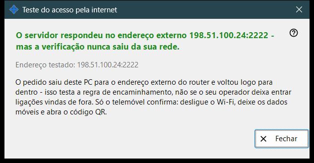
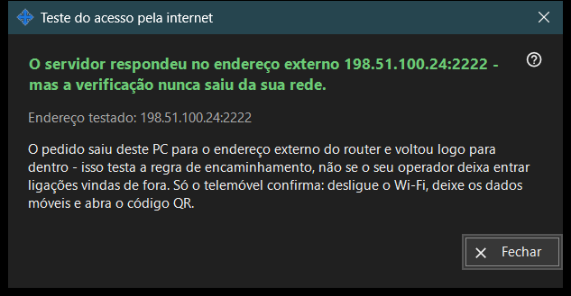

Teste do acesso pela internet
Finalidade
Verifica, a partir deste PC, se o endereço compartilhado responde como um servidor SFTP. Ela se abre a partir do botão «Testar o acesso pela internet» da janela principal e mostra o endereço testado, um veredicto e uma explicação.


Nesta ordem
- Abra a janela; ela mostra o endereço e inicia a verificação de imediato.
- Aguarde o título do resultado.
- Leia a linha de detalhe abaixo.
- Se o resultado não for conclusivo, repita a verificação a partir do celular com o Wi-Fi desligado e os dados móveis ativados.
- Pressione «Fechar».
Os elementos
Endereço testado
«Endereço testado: ..» mostra o host e a porta. Enquanto a verificação está em andamento, a janela escreve «Testando ..». Se nenhum endereço for conhecido, o resultado é «Ainda sem endereço de internet.»; um endereço malformado dá «Endereço inválido.»
Veredictos
«Servidor SFTP acessível» - a porta respondeu com um banner SFTP. «Porta aberta, mas sem resposta SFTP» - algo escuta na porta, mas não é o nosso programa; verifique se a regra do roteador leva a este PC e à porta do compartilhamento. Uma conexão fechada antes da resposta pode indicar o limite de conexões; tente de novo. A falta de resposta a partir deste PC significa que o roteador pode bloquear, a partir de dentro, o seu próprio endereço.
Por que um resultado pode não ser conclusivo
O pedido sai deste PC para o endereço externo do roteador e volta diretamente para dentro, por isso testa a regra de encaminhamento e não se o provedor deixa entrar conexões vindas de fora. Só o celular pode esclarecer: desligue o seu Wi-Fi, deixe os dados móveis ativados e abra o código QR. Se mesmo assim não conseguir se conectar, configure o encaminhamento de portas com o botão «Como configurar o acesso pela internet».
Configurações do gerenciador · Configurações de compartilhamento SFTP · Configurações do servidor de troca